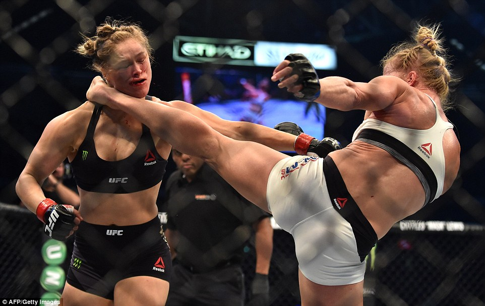

Two years ago, Business Insider called Ronda Rousey “The most dominant athlete alive,” but after getting knocked out twice in a row, the media is already asking if she is going to retire at only 30-years-old. The biggest pay-per-view draw that the Ultimate Fighting Championship (UFC) had ever had went from being an internationally respected superstar, to a target of brutal media criticism.
“In 2015, Rousey was voted as the best female athlete ever in a ESPNW poll. The website made a “Best Female Athlete Bracket,” and more than 13,000 votes chose Rousey over incredibly dominant athletes at the level of Serena Williams, Babe Didrikson Zaharias, Jackie Joyner-Kersey, Steffi Graf, Diana Taurasi, Florence Griffith Joyner, amongst many others. At the time, Rousey was the UFC 135 lb. (Bantamweight) champion, she was undefeated in her Mixed Martial Arts (MMA) career, she had a bronze medal in Judo from the 2008 Beijing Olympics, she had defended her title an UFC record of six consecutive times, and she was featured in an increasing amount of media, including commercials, video games, talk shows and movies.
The amount of revenue and ratings that Rousey was generating for the UFC in 2015 exceeded any record previously set by any other fighter, male or female, in the company’s history. According to UFC records, Rousey’s lowest pay-per-view draw is 375,000 and her highest is 1.1 million, a record since surpassed by Irish superstar Conor McGregor, with more than 1.6 million buys.
During her undefeated reign as a fighter, Rousey appeared on multiple forms of media that only made her even more popular. She posed for the cover of ESPN’s 2012 Body Issue as well as on the cover of Maxim’s September 2013 issue, which she showed off as a guest on Conan O’Brien’s show; She won the 2014 and the 2015 Best Female Athlete ESPY Award, as well as the Best Fighter ESPY Award, amongst many other awards and accolades. In 2015, Rousey was featured in big-budget Hollywood movies like The Expendables 3, Furious 7 and Entourage; she became the first woman featured on the cover of Australia’s Men’s Fitness, the first female athlete to host ESPN’s SportsCenter. She had commercial partnerships with mobile network provider MetroPCS, insurance agency Insureon, Reebok and Carl’s Jr. amongst other undisclosed sponsors.
Rousey’s athleticism, dominance, personality and looks all served to lift her to superstar status, and she was respected and loved by the American public. In March 2013, she was ranked 26 in Maxim’s “Hot 100” issue, and her looks would serve as a point of attention during her career. The media held her as the “Female Mike Tyson,” as UFC color commentator Joe Rogan would repeatedly call her. But every Mike Tyson has his Buster Douglas.
Rousey’s meteoric rise to stardom and astronomical success came to a screeching halt in the form of a brutal and unforgiving head kick from 20-1 underdog, Holly Holm, that stole Rousey’s consciousness before she even hit the mat. The November 2015 fight is considered one of the biggest upsets in sports history, as Rousey had never even lost a round in the UFC, and the vicious knockout shocked the world and made the untouchable Rousey seem more than just human, it made her look weak. It revealed holes in Rousey’s skill set and in the way she managed her personal life and fame, that eventually had analysts from the Bleacher Report question, “Was Ronda Rousey Ever That Good to Begin With?”
The embodiment of female capability for athletic dominance was destroyed in less than three rounds, and the spell that Rousey had on the people, the media and the sport evaporated. But even after the knockout, Rousey still proved lucrative for her sponsors and media outlets, even when the movie deals stopped coming.
Her MetroPCS and Reebok deals remained intact and barely two months after the loss, she became the first mixed martial artist and the second woman to appear on the cover of the legendary The Ring magazine. A few days later she hosted an episode of Saturday Night Live, and a month later, she appeared in body paint as one of three cover athletes on Sports Illustrated Swimsuit Issue. In March she shared the cover of EA Sport’s UFC 2 video game on the foreground with McGregor, as well as a couple of TV Shows throughout the year, including one interview with Ellen DeGeneres, where she admitted to have suicidal thoughts after her knockout loss. Regardless of all of her fame, Rousey’s biggest fan was still UFC President Dana White and the UFC marketing team, since she was still their golden girl and for the time being, their biggest star and their biggest draw.
Rousey helped the UFC reach never-before-seen pay-per-view numbers and she helped elevate the sport to a new level of revenue and popularity. In return, the company was paying Rousey astronomical amounts of money in comparison to the any other fighters, and in one occasion, 30 times that of her opponent, even after her first loss to Holm. In her December 2016 comeback fight against Bantamweight Champion Amanda Nunes, Rousey was paid $3 million, opposed to the champion who was paid $200,000 after the win bonus, According to the Nevada State Athletic Commission. Rousey tied McGregor for the largest disclosed payout in UFC history after he earned the same amount during his second fight with Nate Diaz in August 2016.
Somewhere around April though, Rousey went silent. She stopped doing photo shoots, interviews, radio shows, TV shows or any sort of media for that matter. Throughout 2016, it was unclear whether she would return to the octagon at all, as she had gotten cast as the lead of the remake to the movie “Roadhouse.” When asked if Rousey would be back in 2016 while filming the movie, UFC President White said “The filming of the movie got pushed back,” White said. “She could do both, but the question is, should she do both? She could do both, but why should she? The filming is in a time frame where she’d finish before 200, but it would be cutting it too close.”
But White remained supportive and defensive of Rousey and the time that she was taking off from fighting, saying “The way I look at this one is, Ronda has worked her ass off for us for the last three years,” he said. “She’s been fighting, promoting and building the sport. If anyone deserves the time off, it’s her.” On October 12, 2016, seemingly out of nowhere, White announced that Rousey would be fighting for the championship on December 30, right off the bat and just like that, Rousey had a shot to be at the top again. There was one catch though, as she would not be doing any media before the fight since she wanted to concentrate on the fight.
The marketing leading up to the fight was overwhelmingly Rousey-centric, overshadowing the less-lucrative champion Nunes in all promotional products like posters and t-shirts. It is tradition to feature the champion more than the challenger in the promotional poster, as the title of champion is to be respected, but the UFC created a poster with the words “She’s Back” in the front, referring to Rousey. UFC commentator Rogan said “She just lost a fight and now she’s getting a title shot… How is the promo not even focused on the champion? You have to respect the hierarchy of the champion,” during one of the episodes of the Joe Rogan Experience Podcast.
UFC 207 was marketed as the glorious return of the invincible Rousey, who surely only lost to Holm because of a fluke or something, and was on her way to steamroll over a champion that nobody knew, who was not undefeated, and was not marketable. Rogan even said that “some executives called her [Nunes] cannon fodder,” but in reality, no one knew Rousey’s mental state and were betting on her returning to be the untouchable queen of the 135 lb division once again. After a year of radio silence and speculation, Rousey returned to the octagon the day before New Year’s Eve, and all questions about her would be answered once and for all.
She got destroyed in 48 seconds. Rousey looked hurt from the very first jab, and the ruthless right hands that followed had the former champ stumbling around the octagon, until Nunes finished her with a savage barrage of punches that forced referee Herb Dean to stop the fight. She did not go to sleep like in the Holm fight, but she was essentially out on her feet and Dean protected her from any further brain injury.
Rousey walked out of the octagon without shaking Nunes’ hand or giving Rogan an interview, actions that Washington Post reporter, Jeff Wagenheim, called “classless.” Nunes, clearly offended by the promotional campaign and Rousey’s actions, said “Let’s stop this Ronda Rousey nonsense because this fight was everything about her but I’m the champion,” she said. “I don’t understand why. It’s supposed to be everything about the champion and about the best in the world. Why did Ronda Rousey stop for a year and then come back and have everything? It’s not right.”
Two losses and two vicious knockouts in a row later and the future of Rousey has become cloudy. Even White, harsh defendant of Rousey and also her boss, is not sure whether she will come back to the octagon, “I don’t know. Ronda obviously needs to go home and take some time,” he said. “She’s very rich. She doesn’t need to fight anymore. She’s super competitive. Maybe she wants to, I don’t know. We’ll see what happens.” Brad Slater, Rousey’s agent , told ESPN “It’s too soon to say anything about the future. I don’t want to speak for her. She’s going to take some time to process this.”
With the second loss in a row, the criticism came fast and fierce. Journalists, social media and fellow fighters questioned if she was overrated and overhyped. Number 4 ranked Middleweight contender, Gegard Mousasi, said “She’s a good fighter, she has the mentality of a fighter, but she doesn’t have the skills of a stand-up fighter,” he said, as quoted on MMAFighting. “How can the media make her one of the best fighters when she can’t even kick or punch?” UFC Hall of Famer Bas Rutten blamed Rousey’s commitments outside of the octagon as the reason for her sudden decline “All these things, she knows while she walks to the cage and while she’s in the dressing room. That’s all that going through her head. ‘I better win, I better win. Because if I don’t, what am I going to do with the rest of my life?” Even after pulverizing her, Nunes continued attacking Rousey, when she told TMZ Sports “Yes, for sure [Rousey is overrated]. The UFC make this happen. They put her in a place where she’s not at.”
The headlines were not anymore friendly, using verbs such as “Destroyed,” “Obliterates,” and “Slams” to describe Nunes’ victory over Rousey, from sources such as CBS Sports, FOX Sports, and The Bleacher Report.
Rousey’s mind seems to be elsewhere ever since her skills brought her fame and fortune, and her pride has already been destroyed twice. She was the kind of fighter to refuse to shake the hand of the girl she just arm barred, like back in 2013 against Miesha Tate, and make things personal. Rousey’s emotional reactions brought her criticism for lack of sportsmanship, but while she was winning, also some praise for her toughness. That very raw emotion that made her so entertaining to watch also became her biggest enemy after her loss, and it brought her to the point of having suicidal thoughts, only because she lost her undefeated record and her belt.
Even the people closest to her have doubts that she will return, like her Judo coach Justin Flores, who told Sub Radio “If she’s gonna do anything, from what I know about her, she’s gonna do it to be the best. And not that I don’t think that she can be the best, it’s just, I just don’t know if her body and her mind at this stage in her life, if that’s what’s right for her.” But if anything is true in life is that a mother’s advice hits hardest, and Rousey’s mother and former Judo champion, AnnMaria DeMars, is not a fan of her fighting career. “I would like to see her retire. I would’ve liked to see her retire a long time ago. Who wants to see their kid get hit?” she said to TMZ Sports. “She’s smart and beautiful, let the stupid people get punched in the face.” Even though DeMars said that she did not want to influence her daughter’s decision to retire, she said that she would rather have Rousey focus on acting, writing and producing.
Once again, the future of one of the biggest stars in sport’s history is uncertain, as Rousey has avoided doing any media in 2017. Even White said that he doesn’t know whether she will ever step into the octagon again, but as of today, she still remains in the UFC roster and will probably never be cut by the company who still hears “cha-ching” every time Rousey’s name comes up.
Rousey’s name has only been mentioned a few times in the media since her latest loss, and nothing about her future in the UFC. Besides fighters like Demetrious “Mighty Mouse” Johnson and Donald “Cowboy” Cerrone telling her to deal with the losses like a grown woman, Rousey announced that she got engaged to fellow UFC fighter Travis Browne on April 20.
Some speculate that Rousey will move on to the World Wrestling Entertainment (WWE) since she made an appearance during Wrestlemania 31 in 2015 and tweeted “We’re just getting started,” but no further actions have been taken by Rousey or the WWE. Others, like her mom, think that she will do movies, but the remake of “Roadhouse” that she was supposed to star in was taken out of production after her loss to Holm. Whatever is Rousey’s next move, it will surely cause controversy to some extent, and whether the UFC needs her anymore is up for debate since it has stars like McGregor to promote, and maybe, extinguish.